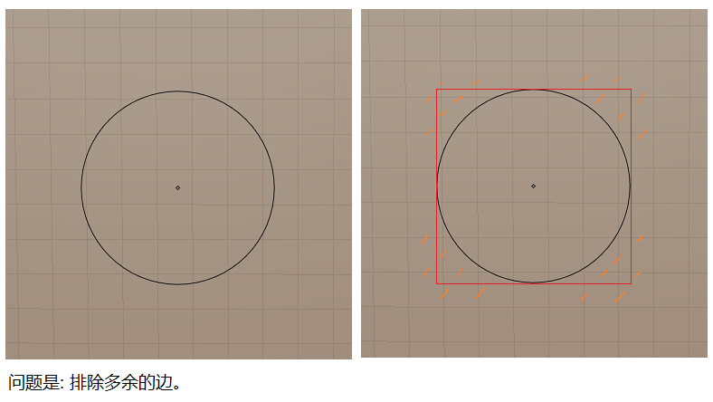
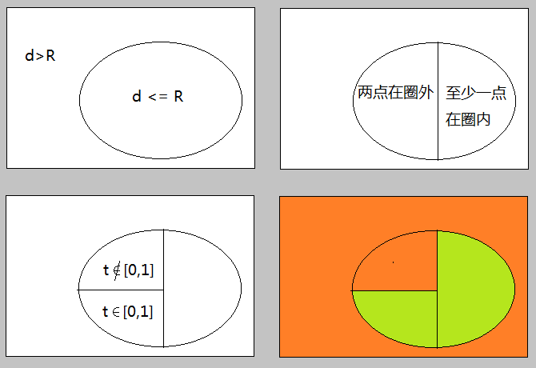

有时候为了找出这个圈ring接触到touch了哪些edge, 会用一个方形来代替这个圈. 问题是这个方形touch到的edges明显比圈理应touch到的要多, 怎么排除呢? 也就是在方形touch到的边作为一个集合set, 我们要在这里面找出正在被圈所接触到的(包括包含在圈内的).
图中我用橙色mark了那些应该被排除在外的边. 问题是怎么用代码表示出来.
d: 圆圈中心点在边所在直线上的投影点, 和圈中心点的距离(点到直线距离);
R: 圆圈半径radius.
t: 圆圈中心点在边直线段上投影点对应直线段的参数, [0,1]表示在直线段内部.
圈外, 没有被圈覆盖到的边:
d > R || ( 边两点在圈外 && d <= R && t outside [0,1] ) // 公式1.
有意思的是, 这是从反面找没有被touch的边, 也可以从正面直接找被touch到的边啊. 从图中可以找到这样的规律:
被圈覆盖到的边:
边至少一点在圈内 || ( 边两点在圈外 && d <= R && t inside [0,1] ) // 公式2.
理应两种情况包含了所有边的情况的, 也就是互补才对. 所以我画了下面的图:

最后是否可以对其中一个公式取负(or 取补)得到另一个呢? 具体怎么做的了呢, 我都忘了.